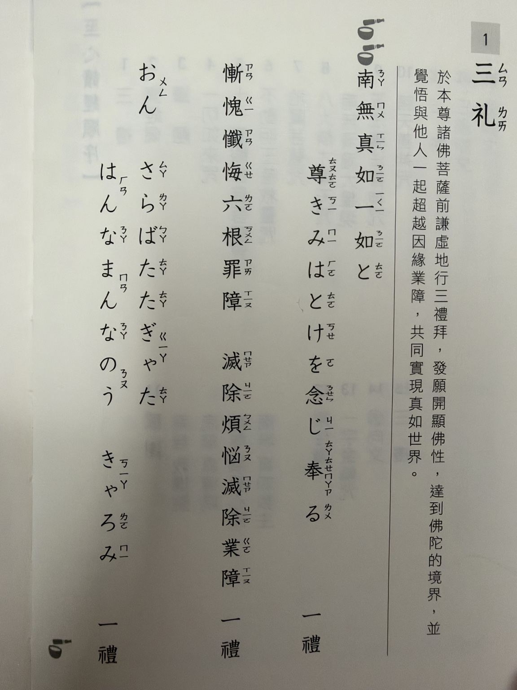

選擇經文 手動選經
01. 三禮
經文圖片取自你提供的照片；可用雙指縮放瀏覽器頁面。

請先確認照片、錄音是否正確對應。
手機麥克風測試
這個功能只測試手機能否收音，尚不會辨識或切換經文。請使用 HTTPS 網址開啟並允許麥克風權限。
尚未開始
下一版開發重點
建立四部經文的聲音特徵，辨識目前正在念誦哪一部經文，並自動切換畫面；之後再開發逐句追蹤。
經文圖片取自你提供的照片；可用雙指縮放瀏覽器頁面。

請先確認照片、錄音是否正確對應。
這個功能只測試手機能否收音，尚不會辨識或切換經文。請使用 HTTPS 網址開啟並允許麥克風權限。
尚未開始
建立四部經文的聲音特徵，辨識目前正在念誦哪一部經文，並自動切換畫面；之後再開發逐句追蹤。